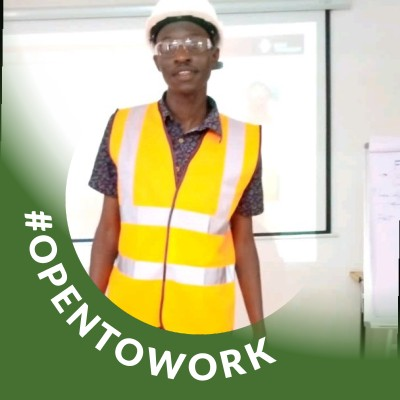

Who is Edwin? Edwin is a dedicated and detail-oriented Geology graduate from the University of Nairobi with hands-on experience in geological mapping, data analysis, and fieldwork. My academic background is complemented by practical training in mineral exploration and data systems through various internships and contract roles. My strong communication and self drive has helped me to work effectively in teams and independently. I am proficient in geological software and tools, including GIS and data analysis software, and have a solid understanding of geological principles and practices. I am eager to contribute my skills and knowledge to a dynamic team in the mining or environmental sector.
Listed are my contacts